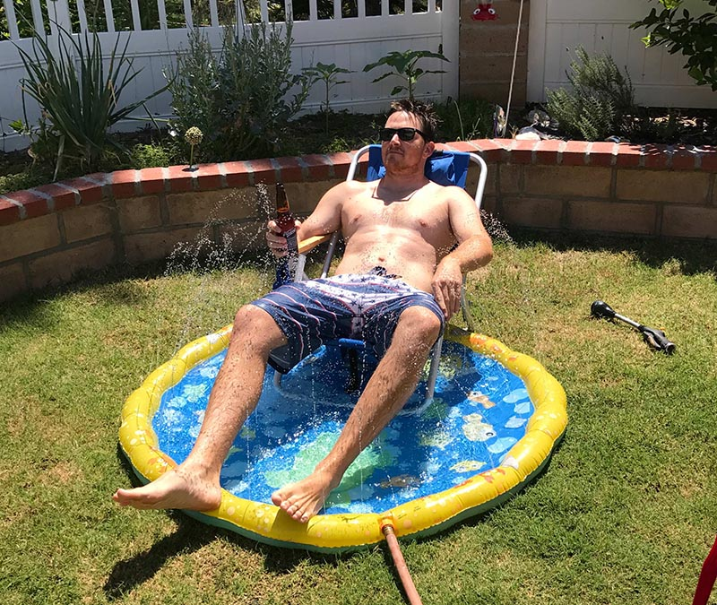

About Me
The work stuff: I am a very tired person. I work 50 hours at my work on Web Design and UI portal wireframing and designing. I run a small freelance business on the side where I do print design for several businesses. I am currently working on getting a certificate for full stack developer.
I have 2 kids under 3 which pretty much keep me as busy as they make me happy. I also am very passionate about home projects. The more the better. I mean, who really holds home projects